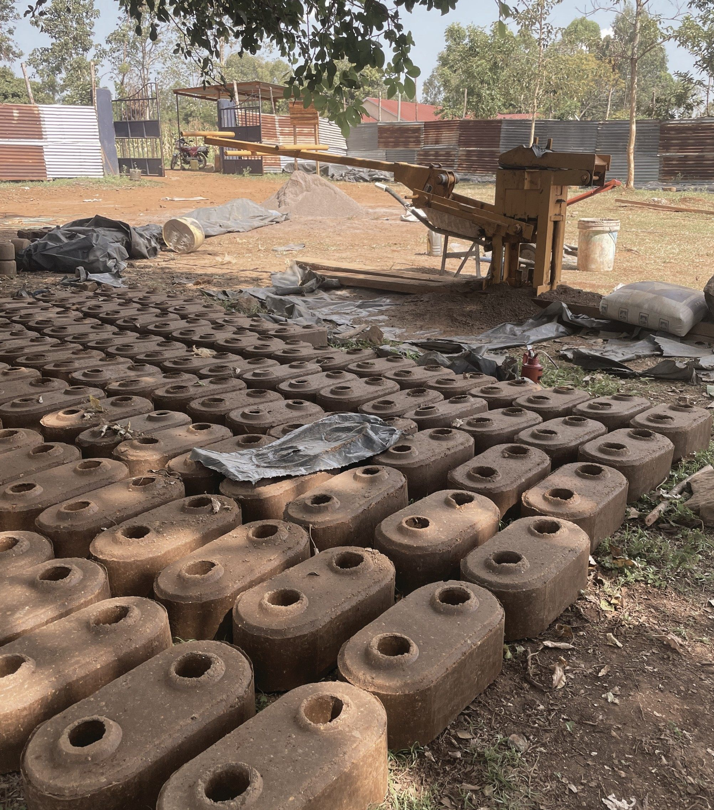

Nalagam portfolio…
Se ne prikaže pravilno? Prenesi PDF
Gašper Uršič
Od ideje do izvedbe


Prihajam iz vasice Idrsko pred mestom Kobarid v posočju. Doma imamo majhno kmetijo, ki mi je skozi otroštvo prinašala konstanten stik z naravo in neomejene možnosti ustvarjanja. Ustvarjal sem vedno z željo po optimizaciji obstoječih ter iskanju novih rešitev na različne probleme. S slednjo ustvarjalnostjo oziroma notranjo zagnanostjo sem se tako lotil različnih projektov od izdelave smuči, lesenih prstanov, recikliranih torb do vodenja gradnje nove klinike v Keniji.
Najbolj se veselim učenja, oziroma temeljitega spoznavanja česarkoli opravljam, saj lahko s slednjim najbolje pripomorem k razvoju novih rešitev in delovnega procesa.
Gašper Uršič mag. inž. arh.
Idrsko 102, Kobarid, 5222
+386 (0)51 817 313
gasper.ursicc@gmail.com
Srednješolsko izobraževanje | Gimnazija Tolmin | 2015-2019
Erazmus izmenjava | Faculdade de Arquitetura | ULisboa | Portugalska | 2023
Fakulteta za arhitekturo v Ljubljani | 2019-2026 | magister inženir arhitekture
• Oblikovalski programi (PS, Ai, Id, Pr, Affinity)
• Načrtovalni programi (AutoCad, Archicad, Rhino, Twinmotion ter osnove drugih)
• Šport (tek, kolo, košarka, smučanje)
• Eksperimentalna delavnica Gust (izdelovanje prototipov od smuči do prstana)
• Urejanje in izdelovanje manjših zunanjih intervencij (poti, mize, lijaki, vrata)
• Rad potujem, sploh ko je možnost stika in dela z lokalno skupnostjo
• Delo v turizmu (delo v hostlu, delo v hotelu, delo v bikeparku, prevozi)
• Skupina Stik (arheološka izkopavanja)
• Studio Pirss (arhitekturni biro)
• Petrol (oddelek za razvoj fizičnih prodajnih mest)
• Rijavec arhitektura (arhitekturni biro)
• Načrtovanje in vodenje gradnje nove klinike v kenijski vasici Majiwa
Gašper Uršič mag. inž. arh.
Idrsko 102, Kobarid, 5222